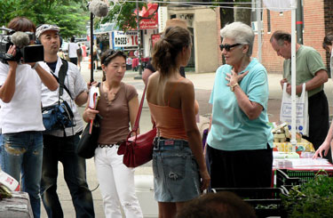

Nina Planck's Real Food Market
I’ve been a little bit obsessed with Nina Planck recently, and I was one of the first people at her Real Food Market on 6th Avenue this morning. Balthazar had a bread stand, Murray’s was represented, and there were a few other odds and ends on offer, like pickles. I suspect it will grow, as long as Nina keeps up a strong presence in New York.
If you have time, you should read Nina’s op-eds, which all appear on her website. In one, she discusses in great detail her tumultuous tenure running Greenmarket. Another is about the idiotic decision to remove whole milk from New York City school cafeterias, and the third is about the downfall of the organic movement thanks to loosening standards. She’s smart and very opinionated, and though her tiny markets can’t compete with the Greenmarket behemoth, the negative attention might convince them to change some of their ways.
Nina believes that the best way to help the environment and ourselves is to eat minimally processed, local food, whether or not it carries the increasingly meaningless label “organic.” She’s a huge proponent of raw milk, which is illegal almost everywhere for no good reason. I tasted some last October during an Alice Waters presentation at school; it was grassy and weird but good.
But she does believe in cooking other foods. She did a hilarious interview in New York Magazine a few weeks ago in which she put the raw-food eaters in their place: “They have it exactly right—nutrients are destroyed when you cook food. But they have the foods upside down. We should be cooking broccoli and carrots to make them more nutritious. And we should be eating raw beef, raw fish, raw egg yolks in Caesar salads, and raw milk.”
Nina is the opposite of what you expect the queen of farmers’ markets to look like. Observe how glamorous she was this morning, with an Asian television crew catching her every word to this star-struck old biddy.

Check our her chic bag and bone structure. You don’t have to be crunchy to want good, farm-fresh food.
Comments
I grew up on raw milk and drank it for years as a kid and have to say I saw no particular health benefits. And it was no picnic when the cows got into that “onion grass” as we called it and you had to drink that milk on your breakfast cereal; we kids used to cry and beg my mother to buy some “store milk” for us, at least for breakfast.
I’m all for de-bunking the vegans and vegetarians, but why are we supposed to be eating raw beef?
This is why I love doing this blog with you. I get all caught up in some food diva’s raw-milk crusade, and you come along and say it’s not that great. Yay motherly wisdom.
She really seems to get more into “traditional” milk, i.e. from grass-fed cows, than anything else. But what gets me is that there doesn’t seem to be a reason to pasteurize milk anymore, and that we have all these regulations about dairy products that aren’t protecting us at all. The worst part of it is the cheese—cheese made from raw milk absolutely tastes better. Did you read her explainer on it?
As for the raw beef, I have no idea.
Hi and thanks for the good questions.
Beef (if it’s grass-fed) contains omega-3 fats which are heat-sensitive. Vitamin B6, also heat-sensitive, is found in red meat and liver. Hence carpaccio, tartare, Korean raw beef appetizers, kibbeh (raw lamb and crushed wheat, Lebanse-style) that is, the nearly universal consumption of raw red meat across cultures.
Pure carnivores like dogs and cats don’t thrive on cooked meat, by the way. Feed your pets real and raw food if you can.
I’ve discussed raw dairy at length elsewhere. It contains lipase to digest fats, phosphatase to absorbe calcium, and lactase to digest lactose – all heat-sensitive enzymes. The famous experiments of Francis Pottenger (an elegant little book called Pottenger’s Cats) showed that cats on pasteurized milk were deformed and infertile by the third generation. Poor kitties!
Fish of course contains LOTS of heat-sensitive omega-3; hence sashimi, gravlax, etc.
As for vegetables, some are more nutritious cooked. Bright orange tough veg like carrots benefit from cooking, pureeing, or juicing to liberate the beta carotene from fibrous cell walls; and the beet, chard, and spinach family all benefit from cooking to reduce oxalic acid, which inhibits calcium absorption.
While you’re at it, know that FATS aid beta carotene absorption. They gave people salads with fat-free dressing or traditional dressing; those eating the fat with the greens absorbed more antioxidants.
And not least, THANKS for coming to the new markets. They are pocket markets, but we hope to grow. We were unexpectedly down three stalls at Petrosino Square. We promise to have a full range of fruit, veg, and fish there soon.
Cheers Nina
Eating some meat and fish raw may be universal across cultures, but so is eating cooked meat and fish and men have been cooking their meat for thousands of years. There’s a reason our ancestors got so excited about the discovery of fire and it wasn’t just because it kept them warm. Raw chicken? Raw rabbit? Personally I think raw meat is disgusting and I really don’t care about the enzymes. I use pollution as an excuse for not eating sushi but I wouldn’t eat it anyway because I don’t like raw fish, either.
Now fat I love, cream, butter, and how I miss the juicy pork roasts we had when I was little (well roasted, of course!) “Lean” is not a selling point with me, I like my meat juicy.
No problems with cooked meat! Though burning meat does create carcinogens so I’d go easy on the charred meat. But most of us don’t eat charred meat by the barrel every day, and I’m sure a little crispiness is dandy.
Harold McGee (in the revised On Food and Cooking) is quite sensible on this point.
Believe it or not, when following the links on Nina Planck’s website on finding real milk, I actually ran across a farm run by the son of the dairy farmer my mother bought milk from when we were kids, in Chester County, Pennsylvania. My parents had to go to a funeral nearby today so they stopped in to buy some milk.
Danny Messner remembered our family and even remembered when his dog bit my mom in the ass and tore the seat of her pants out. But more importantly he sold my folks a gallon of raw Jersey full fat milk. I don’t know why they only bought a gallon, since they live in Maryland and have no way of getting more without driving a fair distance.
I’ll let Mom comment on the flavor but she tells me it is rich and delicious. I’m curious to see if Dad can tolerate it without having to take his pills for lactose intolerance.
There’s something so touching about this story—it’s bringing tears to my eyes!
i have a question for nina and/or anyone…..why hasn’t this topic of grassfed vs grainfed animal foods…. and their respective dietary health consequences been taken up by the mainstream media? i live in new mexico…about 3 years ago, i joined the quivira coalition, which is an organization whose purpose is to reconcile ranchers and eco type people….sounds like a hard nut to crack, eh? well, one of the first newsletters i received was a synopsis of jo robinson’s “why grassfed is best”….she thoroughly described the health benefits of grassfed foods…omega3 vs omega 6…cla….she described her “fantasy” of getting a major publication to do a piece on this topic…i’m wondering if maybe nina is the link we need to get jo (and nina) some major mainstream attention….MY fantasy is an article in the new yorker on this subject….i love the new yorker…it is one of the few publications that actually makes news happen…ie, if they cover it, this subject appears shortly on npr, etc….i’ve been astonished at how prescient some of their articles have been…(esp about iraq, alas)….anyway…i’m sure nina is familiar with jo robinson (www.eatwild.com)….they should hook up and get this topic moving! hmmmm…i’ve been puzzling why this topic has not taken off….i know its against the governments and agri-business’s interests….i’m almost wondering if it isn’t a topic thats too scary and unpalatable for big city dwellers taste….so, the major publications avoid it…..after all…there is not enough good food out there to feed everyone in the city….and to change the infrastructure from the industrial model that has been adopted in the last 50 years would be a MAJOR undertaking….kinda like weaning ourselves off fossil fuels….but, both of those things are literally killing us…
Hi, Pat – Welcome to the blog! You raise some good points here. It may interest you to know that Glenn Reynolds of Instapundit and his wife, Helen interviewed Nina on their blog recently and were very respectful and supportive of quite a lot of what she had to say. You may not agree with their politics (I certainly don’t!) but an interview with them is edging toward mainstream.
As I read the comments here I realized I never followed up with the raw milk story. My father is able to tolerate the raw milk with no stomach distress and doesn’t have to take his lactose-intolerance pills when he drinks it. Because my parents live in Maryland where it is illegal to buy raw milk in any guise, even for “pet food”, they had to buy a share in a local cow in order to keep obtaining a supply, but the Maryland legislature may soon be plugging even that loophole. Talk about a nanny state!
hi rebecca…thank you for your welcome….i was reading my “week” magazine today…in the news at a glance section was….big tobacco: a history of deception" first line….a federal judge ruled last week that major tobacco companies deceived consumers about smoking risks for 5 decades"….well…..duh….i think we are in about the first 10 years of a similar situation in the food arena….i don’t think that industrial agriculture meant at all to place the entire population at health risk with industrial agricultural practices….just like the tobacco companies and the general population really didn’t think much about the health consequences of smoking…but, as time went on, it became clear that smoking was a killer….and the tobacco companies more than anyone else realized this, but chose to stay in bed with the devil….well..the same is happening with the industrial agricultural companies..effeciency,profit, and technology drove agriculture to its present form….the health consequences only became clear when the ginnea pigs became ill! ..ADM springs to mind….with its NPR advertising…“the nature of whats to come”…god, i hope not! haha….but, it has become clear..in the last 10 years…that our food supply is killing us….to the great profit of big pharma…and…these companies don’t want to change! they have just completed their vertical? integration…ie., they control all the upstream and downstream aspects of food production (even tho private farmers do grow the food, they do so by methods dictated by ADM and by the system in place that allows them to survive…)….and are reaping the profits from controlling all aspects of their business….its kind of depressing to make this analogy…coz….look how long it took for big tobacco to owe up! and for change to happen…. and that was only cigarettes! although the addiction aspect of it is a definite wrinkle in the analogy…yeah, its gonna be decades before any substantial change in our food supply will occur….its going to be an infrastructure change of the same magnitude as the switch from hydrocarbons to hydrogen….actually, i think its going to be bigger than that….to run the small farmer off the land took decades…to bring medium size farmers back, using well established no brainer methods that our grandfathers perfected is also going to take decades…and ADM is gonna fight tooth and nail (or….with K street lobbyists) every step of the way! the only thing thats going to hasten this process is consumers making their choices…. i foresee a two tier consumer population….those in the know, who will pay a premium price for good food….and those who don’t have the money or the interest to do so..which will be of course the far bigger market….i guess that will be the mechanism for change….big government setting organic standards recently was a predictable (in hindsight anyway) ploy to keep mainstream agriculture in the drivers seat…hmmmmm…..i don’t even want to call it agriculture…its really the mainstream industrial middlemen…those are the guys making the bucks….
HELP I AM REALLY CONFUSED!!!
Hi, I have been following a traditional diet concepts championed by WAPF and P-PF for 2 years and have been moving towards 100% local omnivore diet for 5++ years. I have read a lot of books and finally have just started one on my list a long time – Real Food by Nina Plank.
Right off the bat I am curious about her pronouncement that “DHA is found only in fish” pg 20 , and “fish is the only soucre of vital omega 3 fats”.
Neither of these statements are noted in the bibliography.
I have been believing that these EFAs are found in other sources such as raw milk and raw milk products, clo, grassfed/finished meats, pastured chickens and eggs etc..etc….etc.
Can anyone clear this up for me?? I am very confused!!! Thanks!
Add a comment